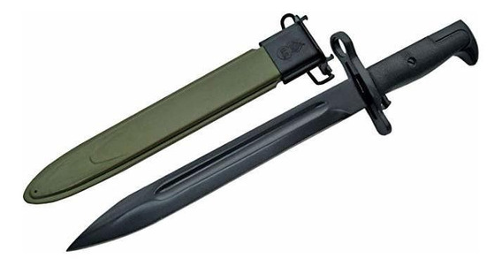
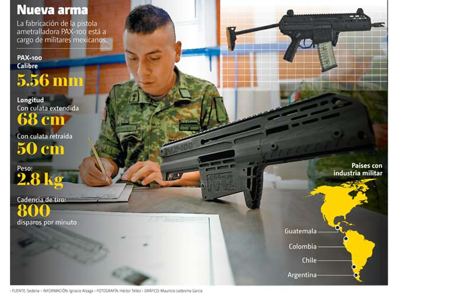
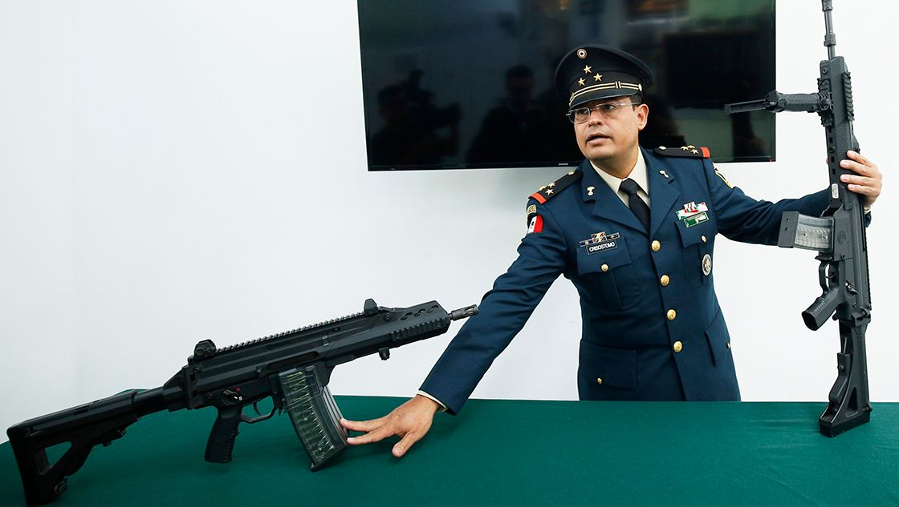
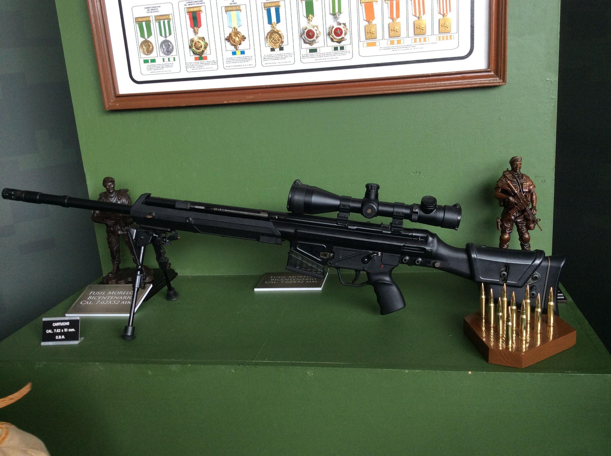
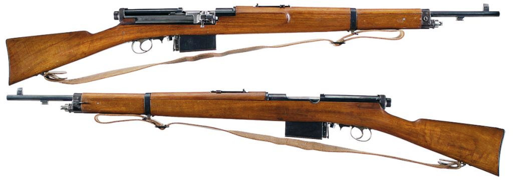
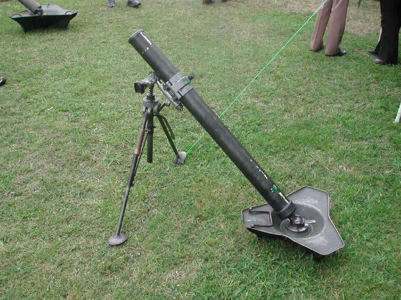
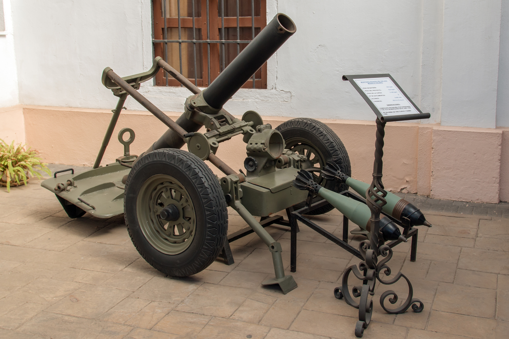
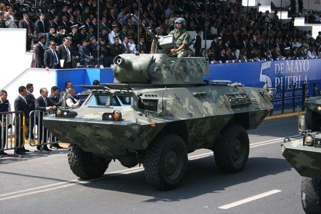
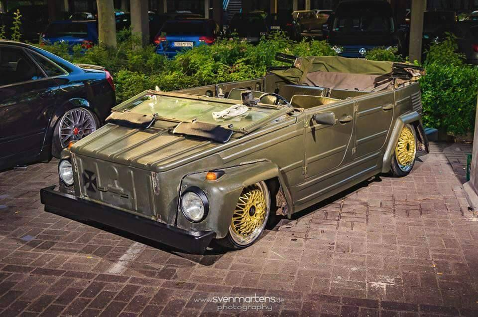
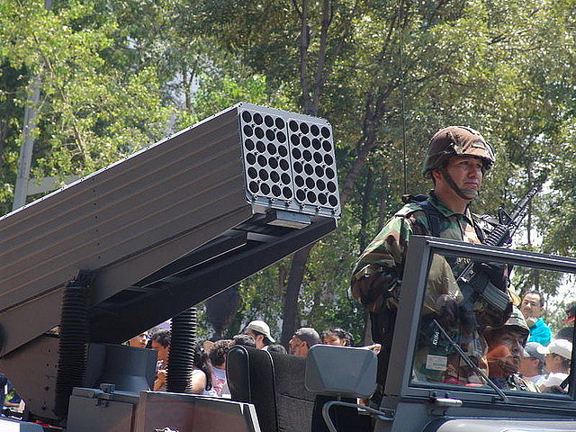

Armamento de fabricacion nacional
| Nombre |
Descripción |
| Bayoneta |
La bayoneta es un arma blanca muy afilada, que se acopla o cala al extremo del cañón del fusil o de la carabina para combatir cuerpo a cuerpo. |
 |
| PAX 100 |
Subfusil en desarrollo, cuando se produzca será ocupado por oficiales, jefes y generales del ejército y fuerza aérea. Su nombre significa Pistola Ametralladora Xiuhcóatl, y el número 100 es porque se empezó a diseñar en el centenario de la Dirección General de Industria Militar. |
 |
| Fx-05 |
Arma de fabricación nacional. Fusil de asalto estándar de Tropas, usado también por el Cuerpo de Fuerzas Especiales de México |
 |
| Morelos B |
Fusil de fabricación nacional.Versión mejorada del fusil Morelos. |
 |
| Mondragon |
Primer fusil semiautomático de diseño nacional. Es empleado como fusil ceremonial. |
 |
| Mortero |
Mortero de fabricacion nacional |
 |
| Mortero pesado |
Mortero pesado de fabricacion nacional |
 |
| DNV BUFALO |
Artilleria autopropulsada. |
 |
| Volkwagen Type 181 safari |
Lanzacohetes multiple. |
 |
| Firos 6 Mrls |
Lanzacohetes multiple. |
 |